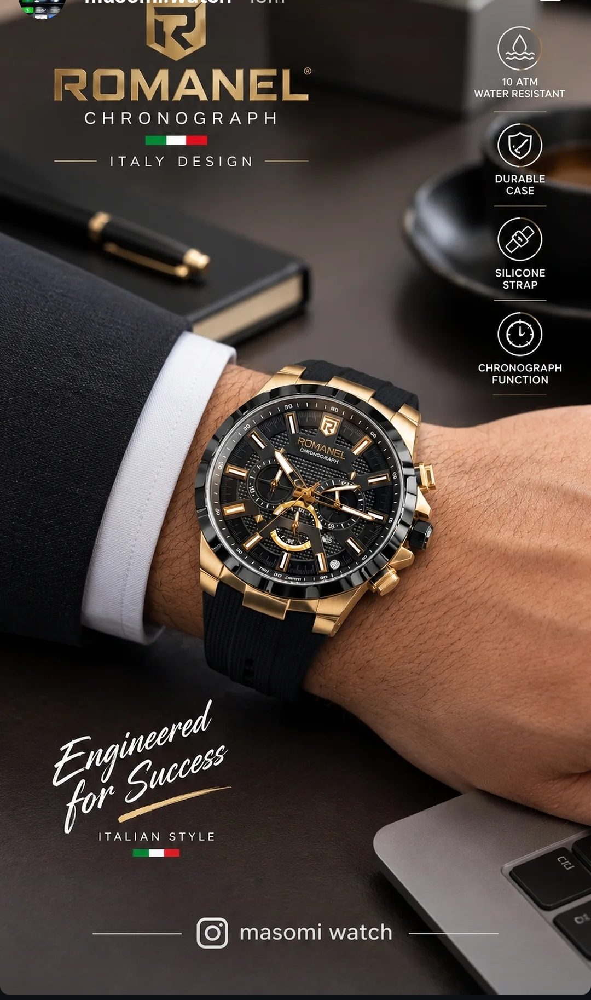
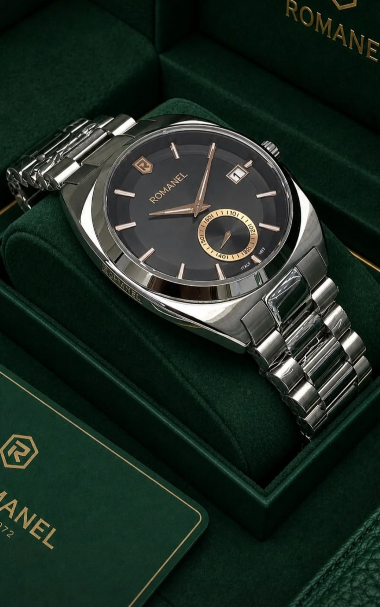

زیبایی در جزئیات پنهان است
در نگاه اول، هماهنگی صفحه روشن با نشانگرها و عقربههای آبی توجه را جلب میکند. قاب نقرهای و بند فلزی، ظاهر ساعت را یکدست و امروزی نشان میدهند؛ بدون آنکه طراحی بیش از اندازه شلوغ شود.
صفحه چشمنواز
زمینه روشن در کنار جزئیات آبی، تضادی ظریف و خوانا ایجاد میکند.
بدنه نقرهای
ظاهر فلزی و براق، حس مرتب و مدرنی به ساعت میدهد.
جزئیات کاربردی
نمایش تاریخ و صفحه فرعی، به طراحی شخصیت بیشتری میبخشند.
مهندسی شده برای موفقیت
ترکیب بینظیر استایل ایتالیایی با تکنولوژی روز دنیا. مقاوم در برابر آب تا ۱۰ اتمسفر، بدنه فوقالعاده بادوام و بند سیلیکونی راحت، این ساعت را به همراهی ایدهآل برای هر لحظه تبدیل کرده است.

بستهبندیای هماهنگ با ظاهر ساعت
جعبه مخملی سبز با فضای داخلی لوکس، همراه با کارت گارانتی و طراحی اختصاصی، مجموعه را برای نگهداری یا هدیه دادن جذابتر میکند.

جمعبندی
ROMANEL با صفحه روشن، جزئیات آبی و ترکیب نقرهای، برای علاقهمندان به طراحی متعادل و شیک جذاب است. اگر به هماهنگی رنگها و ظرافت جزئیات اهمیت میدهید، این مدل ارزش بررسی دارد.